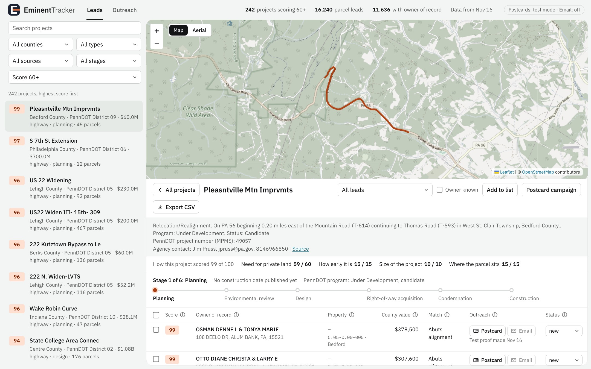
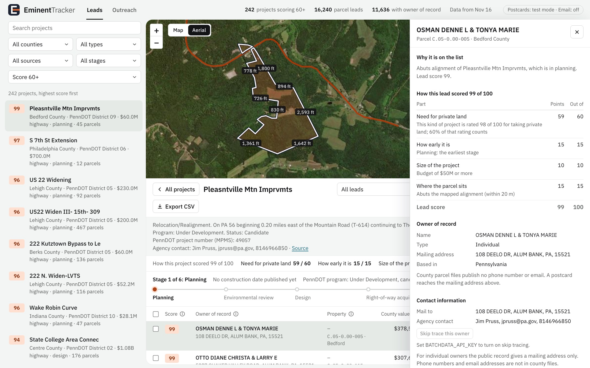
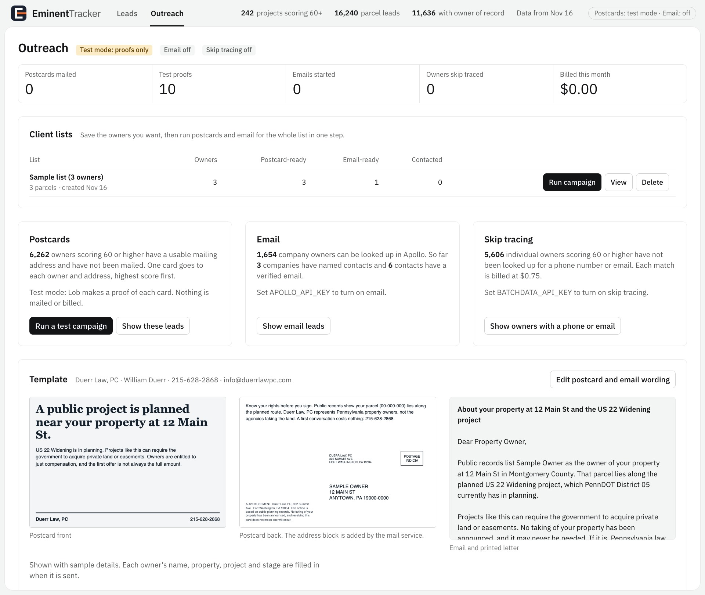

Built by eminent domain attorneys, for eminent domain attorneys.
Request access See the live Pennsylvania dataFind the landbefore the notice.
EminentTracker reads public project plans every day, finds each parcel in the path, and gives you the owner of record years before a condemnation notice is filed.

{{leads}}parcel leads on file in Pennsylvania as of {{date}}
This is the whole public record, as the agency publishes it. No parcels, no owners, no notice to anyone.
From the plan
Every lead is scored out of 100 on four published measures, so you can see exactly why it ranks where it does.
to the parcel
How it works
Three steps run every day. You open the list and the work is already done.
First, it reads the plans.
Long before right-of-way plans are filed, agencies publish what they intend to build.
- PennDOT's Twelve Year Program and Four Year Plan
- Federal environmental notices for highways, rail and pipelines
- City legislation authorizing acquisition or condemnation

Then it finds every parcel on the route.
The mapped route is laid over county parcel records. Each parcel that abuts it becomes a lead, with its boundary, its assessed value and its owner of record.

Finally, you reach the owner first.
Save the owners you want to a list. One click sends each a postcard and each company an email, written in your firm's name and marked as attorney advertising.

On file today
{{leads}}
parcels matched to {{projects}} Pennsylvania projects that score 60 or higher for taking private land. {{owners}} of them carry an owner of record.
Counted on {{date}}. The list is rebuilt every day at 5pm Eastern.
- Owner
- William Christopher Duerr
- Firm
- Duerr Law, PC
- Based in
- Fort Washington, Pennsylvania
- Coverage
- Pennsylvania now. Other states are being added.
Who built it
The first offer is rarely the last word. An owner should hear that before signing, not after.
EminentTracker was built inside an eminent domain practice to answer one question: who is about to lose land, and does anyone know yet? Condemnation filings answer it too late. The planning lists answer it years earlier, but nobody has time to read them and trace every route to a deed.
So the software does the reading. It is the tool we wanted for our own practice, and it is now open to other firms that represent property owners.
The record
Read every day
- PennDOT project map statewide
- Federal Register NEPA notices
- Pittsburgh City Council legislation
Parcel records
- {{owner_counties}} counties with owner and mailing address
- {{counties}} counties with projects on the list
- Parcel boundaries drawn from county files
Be there before the notice.
Access is opening firm by firm. Tell us where you practice and we will set your firm up.
Request access